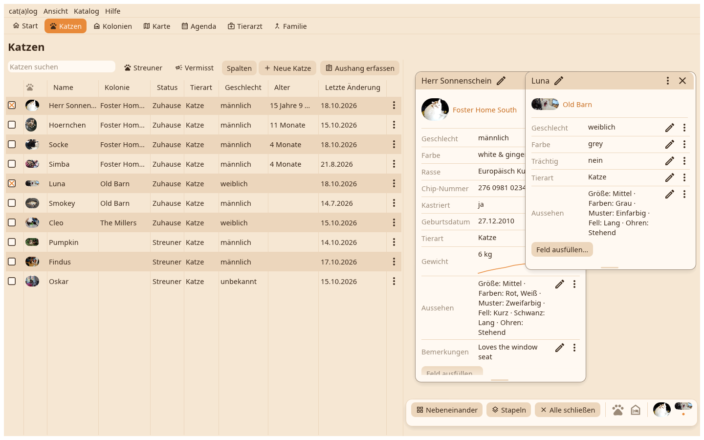

Eine Katze oder ein Zuhause öffnet sich als Karteikarte auf dem Schreibtisch: mehrere nebeneinander, an ihren Platz gezogen und dort wiedergefunden, an der Unterkante in der Höhe verändert.

Eine Titelleiste mit dem Namen, dem Stift, der umbenennt, dem ×, das schließt, und dem ⋮ mit dem Menü. Darunter das Gesicht und das Zuhause, dann nur die Felder, die einen Wert haben; eine mehr als einmal gemessene Zahl zeichnet ihren Verlauf unter den Wert. Der Stift an einer Zeile öffnet den Editor des Feldes, das ⋮ an einer Zeile seinen Verlauf und seine Aktionen. "Ein Feld ausfüllen…" trägt einen Wert ein.
Solange Karten auf dem Schreibtisch liegen, schwebt unten ein Dock: Nebeneinander legt sie in ein passendes Raster, Stapeln legt sie in einer Kaskade übereinander, Alle schließen räumt den Schreibtisch. Die Gesichter im Dock sind die Karten; ein Klick holt eine nach vorn.
Bearbeiten öffnet die ganze Seite, Zeitleiste alles, was geschah, dann die Karte als Dokument, der Tierarztbericht, das Vermisst-Plakat, die Karte als Bild kopieren, in ein anderes Zuhause verschieben, hier gesehen, Aushang hängt hier, auf der Karte zeigen, zusammenführen, verstecken, löschen.